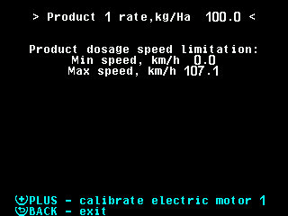
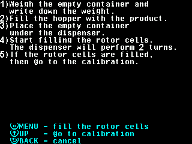
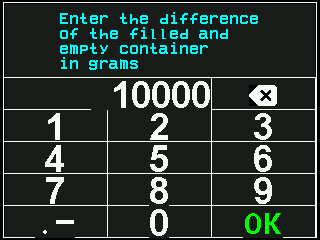
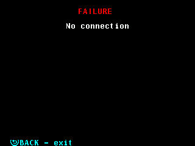

Calibrate a dispenser motor by weight
Tell the panel how much product a motor-driven dispenser delivers per shaft turn — what you need, the steps on the screen, and what the failure messages mean.
The calibration tells the panel how much product the dispenser delivers per turn of its shaft. Without it, the panel cannot turn the rate in kg/ha into a shaft speed. Calibrate every dispenser separately, and again whenever the product or the seed lot changes. It applies to motors in the “Flow” and “Hybrid” modes.
You need: scales, a container to put under the dispenser, and the product in the hopper.
Stop the machine. While it moves, the calibration item is hidden.
Open the context menu of the motor — on the Motors screen, or from its product on the rate control screen. Select “Dispenser calibration(weight)” (from the rate control screen: “Calibration, product”) and press “MENU”.
The first screen shows the target rates of the products in use — the product of this motor between arrows — and under “Product dosage speed limitation:” the lowest and highest travel speed at which the rates can be applied. Press “PLUS”.

The first calibration screen with the speed limits. The screen lists what to do before calibrating: weigh the empty container and note the weight, fill the hopper, put the container under the dispenser, fill the rotor cells. Press “MENU” to fill the rotor cells.

The list of actions before the calibration. The motor turns the shaft and the “Rotations” counter runs. After two turns the panel stops the motor and returns. “BACK” stops it earlier.
Press “UP”. The screen lists the steps of the calibration itself: empty the container, put it under the dispenser, calibrate, stop the motor, weigh. Empty the container and put it back.
Press “MENU”. The motor runs and the dispenser fills the container. Collect as much as possible — at least 1 kg, at most 60 kg.
Press “BACK” to stop the motor.
After more than one shaft turn, the bottom line offers “MINUS” to complete the calibration. Press “MINUS”.

The calibration screen with the line for completing it. Weigh the full container. On the number pad, type the difference between full and empty, in grams, and press “MENU”. The panel stores “Weight, gr” and “Rotations” and returns to the first screen.

The number pad asking for the weight in grams. Press “BACK” to leave.
To discard the calibration instead of step 9, press “BACK”: the panel asks “Are you sure?” and discards on “PLUS”; “MINUS” returns to the calibration.
The context menu afterwards shows not your grams but an equivalent pair of numbers; only their ratio matters. It is stored by itself.
Messages during the calibration
| Message | Meaning and what to do |
|---|---|
| “FAILURE” with a reason, e.g. “No connection” or “No data from rotation sensor” | The link was lost, the motor reported an alarm, or no shaft turns arrived for ten seconds. The motor is stopped, nothing is stored. “BACK” returns to the first screen; start again. |
| “All electric motors not controlled.” | No motor is under control. Take the motor into control with “PLUS” on the Motors screen. |
| The motor name in red with “Not controlled”, “No connection” or “FAILURE” | The calibration cannot start until that state is cleared. |
| “Can not provide dosage!”, limits in red | The rates contradict each other: no speed meets them all. Change a rate, or the shaft speed limits — each line names the product that sets it. |
| “Run calibration on the console” | A push-button on the motor controller is set up: the motor runs only while the button is held. |
| The speed must be zero (in English in every language) | The machine is moving. Stop it. |

Something your machine does that this page does not answer? Write to support@agriwelt.com — an engineer answers.